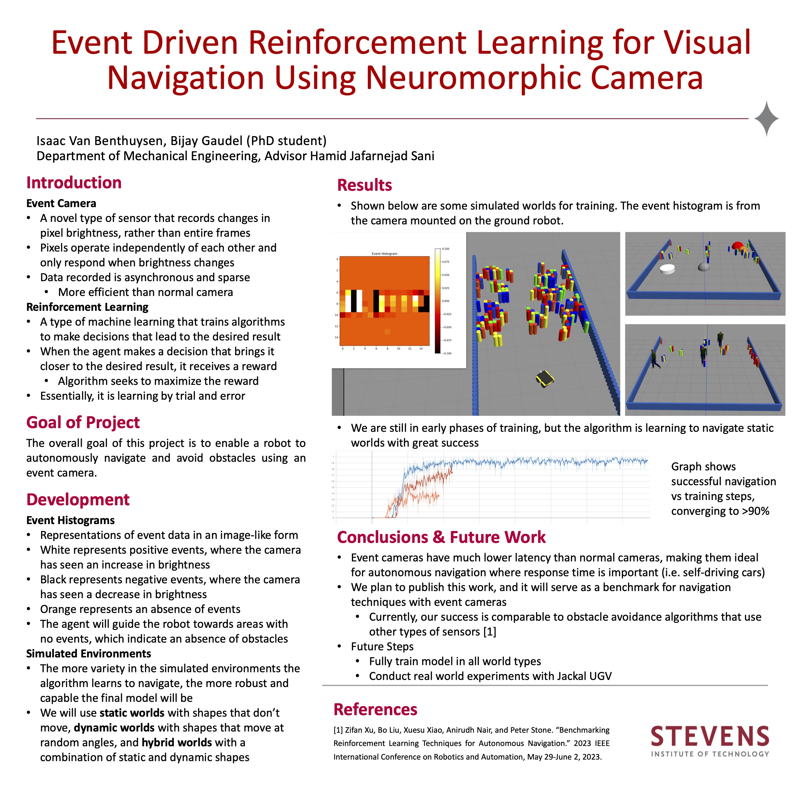

Event-Driven Reinforcement Learning for Autonomous Navigation using Neuromorphic Camera
Abstract
Event cameras, also known as neuromorphic sensors, have emerged as a highly attractive option for low-latency, agile vision in environments where conventional frame-based cameras struggle. In this paper, we present an event-driven reinforcement learning framework designed specifically for the autonomous navigation of an unmanned ground vehicle (UGV) using event streams. Our method begins with a self-supervised contrastive perception module that, together with sparse spatio-temporal convolutional encoders, converts asynchronous event data into compact, information-rich feature embeddings. We then evaluate four policy networks independently—each with a different architecture (MLP, CNN, RNN, or Transformer)—training each policy independetnly alongside the perception module to determine how architectural design influences navigation. Through an extensive series of simulation experiments on established benchmark environments, we demonstrate that each event-based policy achieves navigation efficiency metrics on par with laser-based approaches. Finally, to confirm real-world practicality, we successfully deploy the trained perception–policy pipelines on a Clearpath Jackal UGV equipped with an event camera.
Posters
My main contributions to this work are the simulated worlds in which the reinforcement learning agent trains. I designed a variety of training worlds, both static and dynamic. I also created a 3D replica of our real-world testing area; this served as both a highly realistic training world, as well as a way to ensure our event camera simulator was creating realistic events.
Summer 2025 Poster

Summer 2024 Poster
